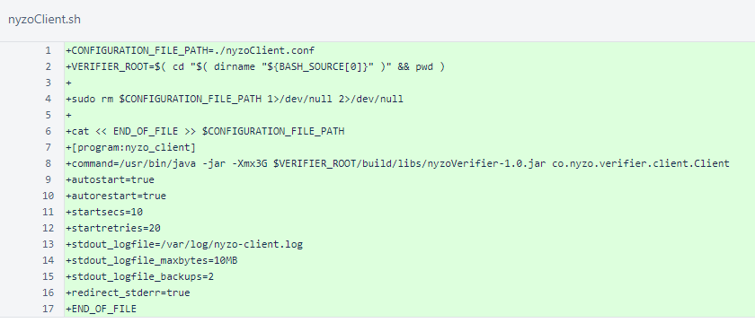
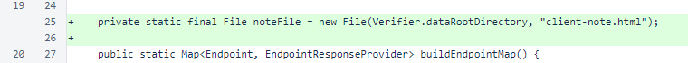
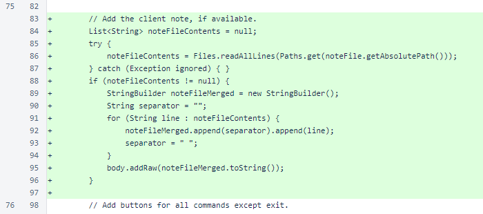
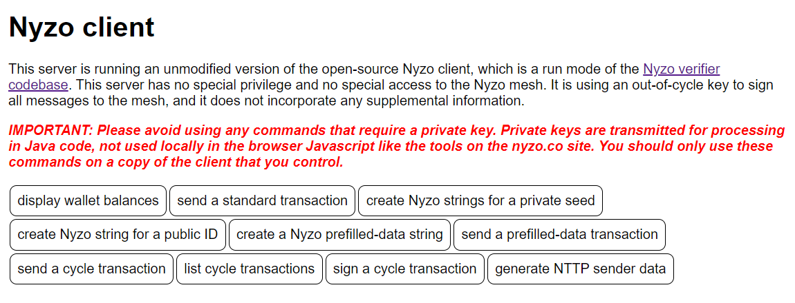
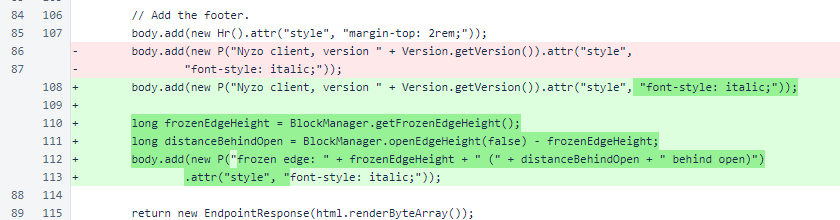

Nyzo version 562 (commit on GitHub) adds a script to generate a supervisor configuration file for the client.
This version affects the client only.
Version 561 introduced the client API for Nyzo, and an instance of the client was started at client.nyzo.co. This version adds a script that is necessary for creating an instance that is identical in function to the client.nyzo.co instance.
The nyzoClient.sh script generates the nyzoClient.conf file for running the Nyzo verifier with supervisor.
The following command creates the configuration file and places it in the correct location. The first part of the command makes the script executable. The second part runs the script. The third part copies the configuration file to the supervisor configuration directory.
chmod +x nyzoClient.sh && ./nyzoClient.sh && sudo cp nyzoClient.conf /etc/supervisor/conf.d/
Step-by-step instructions for configuration of the client will be available soon.
In ClientController, a field has been added to specify the path of a file that adds a note to the main listing page (path "/" on the web listener).
In the ClientController.page() method, the note is added between the title and command buttons.
On client.nyzo.co, this is used to display a message about the code and a warning not to use commands that require a private key.
Also in the ClientController.page() method, the frozen edge height and distance behind open edge are now added to the footer.
